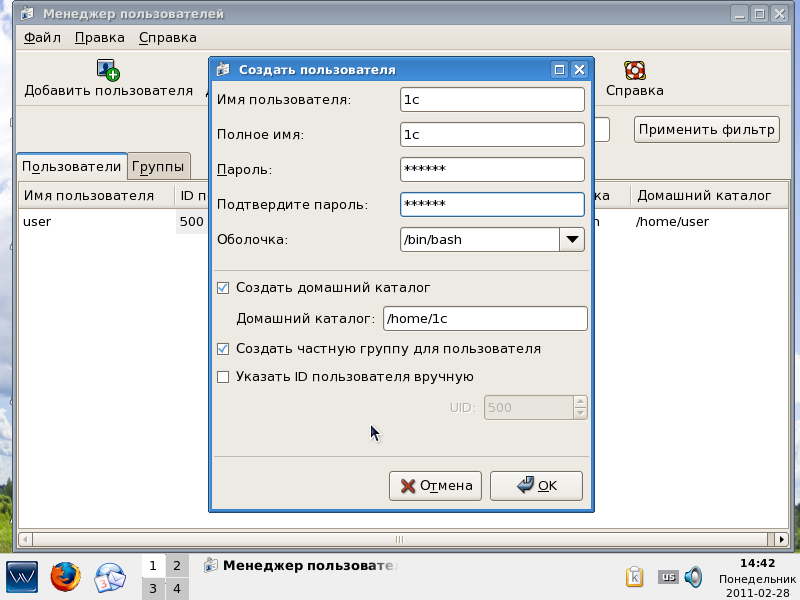
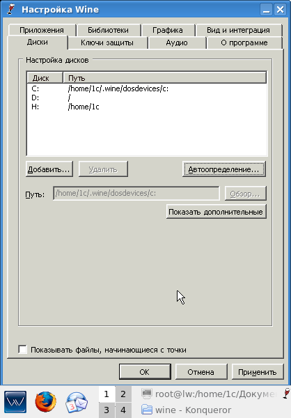

|
Внимание: Инструкция подходит для рабочих мест и серверов LinuxWizard до версии 2.0 включительно.
0. Требования к серверу 1С:Предприятие 8.2
32-х разрядный сервер, имеющий процессор не младше Pentium 4/Xeon 2,4 ГГц, ОЗУ от 1 Гб (предпочтительно от 4 Гб, при пиковых нагрузках 1 Гб памяти не хватит). Обязательно наличие свободного USB-порта для подключения ключа защиты HASP. Обязательно наличие DVD-ROM для установки сервера LinuxWizard и использования дистрибутивов от "1С". Обязательно наличие, как минимум, одного сетевого интерфейса для получения обновлений "1С" через сеть Internet и подключения клиентских рабочих мест 1С:Предприятие 8.2.
1. Настройка Wine@Etersoft
Для работы с 1С:Предприятие 8.2 Вам необходим сервер LinuxWizard, содержащий в себе Wine@Etersoft. Дистрибутив Wine@Etersoft входит во все решения LinuxWizard, отмеченные знаком "+". В серверной линейке это: GET-Term+ и GET-Combi, но также возможно создание (под заказ) специального "+" дистрибутива и из других редакций. В данной инструкции установка производится на сервер LinuxWizard GET-Term+.
Особенностью Wine@Etersoft является забота о безопасности, поэтому (исходя из парадигмы безопасности Linux) под пользователем root он не запускается. Вам необходимо создать специального пользователя для 1С и наделить его необходимыми правами.
Запустим утилиту управления пользователями из меню LinuxWizard (Управление > Пользователи и группы) и создадим нового пользователя "1c" (проследите чтобы "с" в имени "1с" была латинской):

Завершим сеанс KDE и перезайдём под пользователем 1c. Загрузившись в новый сеанс, нажмём Alt+F2, в появившемся окне наберём winecfg и нажмём Enter. Должна произойти первоначальная инициализация Wine@Etersoft (только при первом запуске) и затем должно открыться окно конфигурирования.

Здесь во вкладке "Диски" необходимо последовательно нажать кнопку "Автоопределение..." и "Применить", а затем во вкладке "Ключи защиты" установить загрузку Вашего лицензионного ключа (обычно HASP HL). Нажатием кнопки "OK" закрываем окно.
2. Установка СУБД PostgreSQL для 1С
Установке СУБД PostgreSQL 8.4.1-1.1C посвящена отдельная статья нашей базы знаний.
3. Установка ключа защиты HASP
Если число подключённых пользователей не будет превышать 10, то для сервера 1С:Предприятие 8.2, работающего под Linux, Вам не потребуется серверный ключ. Это приятная новость. Установке ключа защиты Sentinel HASP посвящена отдельная статья нашей базы знаний.
В Linux-версии сервера 1С:Предприятие 8.2 отсутствует файл nethasp.ini, поэтому его необходимо либо скопировать с клиентской инсталляции, либо создать самостоятельно.
$ su -
# cd /opt/1C/v8.2/i386/conf
# touch nethasp.ini
# mcedit nethasp.ini
Содержание файла nethasp.ini:
[NH_COMMON]
NH_TCPIP = Enabled ; Указываем метод поиска сервера лицензий
[NH_TCPIP]
NH_SERVER_ADDR = 127.0.0.1 ; Список IP-адресов для серверов лицензий
NH_PORT_NUMBER = 475 ; Указываем номер порта (по-умолчанию 475)
NH_TCPIP_METHOD = TCP ; Указываем протокол обмена информацией с сервером лицензий
; Рекомендуется использовать TCP, т.к. Windows-клиенты 1С
; используют TCP, а в Linux по-умолчанию отчего-то UDP
4. Установка сервера 1С:Предприятие 8.2
Скачиваем с сайта "фирмы 1С" дистрибутив сервера 1С:Предприятия 8.2 для Linux (нам нужна версия в rpm-пакетах для платформы Red Hat). Ниже будет дано назначение rpm-пакетов, входящих в дистрибутив.
|
Пакет |
Описание |
|
1C_Enterprise82-server-8.2.12-87.i386.rpm |
Сервер 1С:Предприятие 8.2 для Linux |
|
1C_Enterprise82-server-nls-8.2.12-87.i386.rpm |
Национальные ресурсы для сервера 1С:Предприятие 8.2 для Linux |
|
1C_Enterprise82-common-8.2.12-87.i386.rpm |
Данный набор компонент требуется для сервера и компонент web-сервера |
|
1C_Enterprise82-common-nls-8.2.12-87.i386.rpm |
Национальные ресурсы для общих компонент 1С:Предприятие 8.2 для Linux |
|
1C_Enterprise82-ws-8.2.12-87.i386.rpm |
Компоненты Web-сервисов 1С:Предприятие 8.2 для Linux |
|
1C_Enterprise82-ws-nls-8.2.12-87.i386.rpm |
Национальные ресурсы для компонент Web-сервисов 1С:Предприятие 8.2 для Linux |
|
1C_Enterprise82-crs-8.2.12-87.i386.rpm |
Компоненты сервера Хранилища Конфигурации 1С:Предприятие 8.2 для Linux |
|
1C_Enterprise82-crs-nls-8.2.12-87.i386.rpm |
Национальные ресурсы для компонент сервера Хранилища Конфигурации 1С:Предприятие 8.2 для Linux |
Устанавливаем:
$ su -
# rpm -ivh 1C_Enterprise82-common-nls-8.2.12-87.i386.rpm 1C_Enterprise82-common-8.2.12-87.i386.rpm
# rpm -ivh 1C_Enterprise82-server-nls-8.2.12-87.i386.rpm 1C_Enterprise82-server-8.2.12-87.i386.rpm
# rpm -ivh 1C_Enterprise82-ws-nls-8.2.12-87.i386.rpm 1C_Enterprise82-ws-8.2.12-87.i386.rpm
# rpm -ivh 1C_Enterprise82-crs-nls-8.2.12-87.i386.rpm 1C_Enterprise82-crs-8.2.12-87.i386.rpm
После установки автоматически создаётся пользователь usr1cv82, принадлежащий группе grp1cv82. Из под пользователя usr1cv82 будет работать сервер 1С:Предприятие 8.2. Добавим нашего сеансового пользователя 1с в группу grp1cv82.
Узнаем ID группы grp1cv82 (и заодно проверим, что пользователь usr1cv82 был создан):
# cat /etc/passwd | grep 1cv82
usr1cv82:x:502:502:1C Enterprise 8.2 server launcher:/home/usr1cv82:/bin/bash
Добавляем пользователя 1с в группу grp1cv82 с ID = 502:
# usermod -a -G 502 1c
Устанавливаем автозагрузку сервера 1С:Предприятие 8.2 при старте LinuxWizard:
# chkconfig srv1cv82 on
Запускаем сервер 1С:Предприятие 8.2
# /etc/init.d/srv1cv82 start
Starting 1C:Enterprise 8.2 server: OK
5. Настройка сервера 1С:Предприятие 8.2
1С имеет своё представление о том, где должны лежать шрифты в Linux. Поэтому нам придётся создать символьную ссылку на наши шрифты.
$ su -
# ln -s /usr/share/fonts/TTF/ms/ /usr/share/fonts/msttcorefonts
Для работы сервера необходима утилита преобразования шрифтов ttf2afm. Установим её из серверного репозитария LinuxWizard.
# yum install tetex-afm
Конфигурируем сервер 1С:Предприятие 8.2:
# cd /opt/1C/v8.2/i386/utils
# ./config_server
Перезапускаем сервер 1С:Предприятие 8.2:
# /etc/init.d/srv1cv82 restart
6. Режимы работы 1C:Предприятие 8.2
Платформа 1С:Предприятие 8.2 может работать в режимах тонкого и толстого клиента, web-сервера с БД в файловом варианте и web-сервера с БД в СУБД PostgreSQL.
В режиме тонкого и толстого клиента мы просто устанавливаем, соответственно, тонкий или толстый клиент на рабочее место LinuxWizard GET-Work+, подключаемся к серверу 1C:Предприятие 8.2 и создаём там информационную базу или работаем с уже установленной ранее. В режиме web-сервера мы запускаем любой популярный браузер (Mozilla Firefox, Opera, Internet Explorer) и заходим по IP или имени внутреннего домена сервера в 1С. При этом БД физически может храниться в файле, а может находиться в БД PostgreSQL.
7. Установка и настройка web-доступа к 1C:Предприятие 8.2
Отличительной чертой платформы 1С:Предприятие 8.2 является возможность доступа к информационной базе 1C через браузер. Это позволяет при определённых административных настройках web-сервера предоставить сотрудникам компании доступ из дома или, ограничившись корпоративной ЛВС, не тратить время на установку клиентов на каждом рабочем месте, получив при этом централизованное управление доступом.
Скопируйте настройки 1С v8.2 в профиль нашего пользователя 1С.
$ su -
# cp -rf /home/usr1cv82/.1cv82 /home/1c/.1cv82/
Если Вы хотите использовать СУБД, подключитесь тонким клиентом 1С и установите информационную базу в ранее созданную БД "1c".
Если Вы хотите использовать файловый вариант, вставьте DVD с информационной базой и скопируйте пустую БД в свой профиль:
$ mkdir /home/1c/db
$ cd /media/1C_8_2_8/Empty Database
$ cp 1Cv8.1CD /home/1c/db
Ваш дистрибутив 1С v8.2 может иметь имя отличное от "1С_8_2_8", используйте собственные данные в этой части.
Вам необходимо установить web-сервер. Мы будем предполагать, что у Вас уже установлен web-сервер XAMPP (как это было описано в отдельной статье).
Создадим папку для инсталляции файла-дескриптора 1С и использования с web-сервером:
# mkdir /opt/lampp/1cbase
Теперь проинсталлируем web-компоненты. Здесь Вам необходимо определиться, какой вариант Вы будете использовать:
# cd /opt/1C/v8.2/i386
Для файлового варианта, введите:
# ./webinst -apache22 -wsdir 1cbase -dir '/opt/lampp/1cbase/' -connStr
'File=/home/1c/db"' -confPath /opt/lampp/etc/extra/httpd-xampp.conf
Для варианта с БД хранимой в PostgreSQL-1C, введите:
# ./webinst -apache22 -wsdir 1cbase -dir '/opt/lampp/1cbase/' -connStr
'Srvr="localhost";Ref="1c"' -confPath /opt/lampp/etc/extra/httpd-xampp.conf
Получаем сообщение:
Установка выполнена успешно.
acp: /opt/lampp/etc/extra/httpd-xampp.conf
rd: /opt/lampp/1cbase/
vd: /opt/lampp/etc/extra/httpd-xampp.conf
Установщик создал файл-дескриптор 1С по пути /opt/lampp/1cbase/default.vrd и изменил конфигурационный файл web-сервера по пути /opt/lampp/etc/extra/httpd-xampp.conf
Необходимо установить права на файл-дескриптор:
# chmod 777 /opt/lampp/1cbase/default.vrd
Проверьте.
В конфигурационном файле web-сервера должны были появиться следующие строки:
# 1C v8.2 module loading
LoadModule _1cws_module "/opt/1C/v8.2/i386/wsap22.so"
# 1C v8.2 publication
Alias /basa1 "/opt/lampp/1cbase"
# 1C v8.2 web-directory
<Directory "/opt/lampp/1cbase/">
AllowOverride None
Options None
Order allow,deny
Allow from all
SetHandler 1c-application
ManagedApplicationDescriptor "/opt/lampp/1cbase/default.vrd"
</Directory>
В файле-дескрипторе (в зависимости от выбранного варианта).
Файловый вариант:
<?xml version="1.0" encoding="UTF-8"?>
<point xmlns="http://v8.1c.ru/8.2/virtual-resource-system"
xmlns:xs="http://www.w3.org/2001/XMLSchema"
xmlns:xsi="http://www.w3.org/2001/XMLSchema-instance"
base="/1cbase"
ib="File=/home/1c/db;"/>
Работа с БД:
<?xml version="1.0" encoding="UTF-8"?>
<point xmlns="http://v8.1c.ru/8.2/virtual-resource-system"
xmlns:xs="http://www.w3.org/2001/XMLSchema"
xmlns:xsi="http://www.w3.org/2001/XMLSchema-instance"
base="/1cbase"
ib="Srv="localhost";Ref="1c""/>
Теперь можно перезапустить web-сервер и сервер 1С:Предприятие 8.2:
# /opt/lampp/lampp restart
# /etc/init.d/srv1cv82 restart
Запустив браузер и введя в строке адреса http://localhost/1cbase/, Вы попадёте в диалог сервера 1С:Предприятие 8.2 и сможете подключиться к информационной базе. По умолчанию web-cервер в сборке XAMPP отдаёт контент любому клиенту, обратившемуся с любого IP-адреса. Это поведение можно изменить, отредактировав файл /opt/lampp/etc/httpd.conf.
|